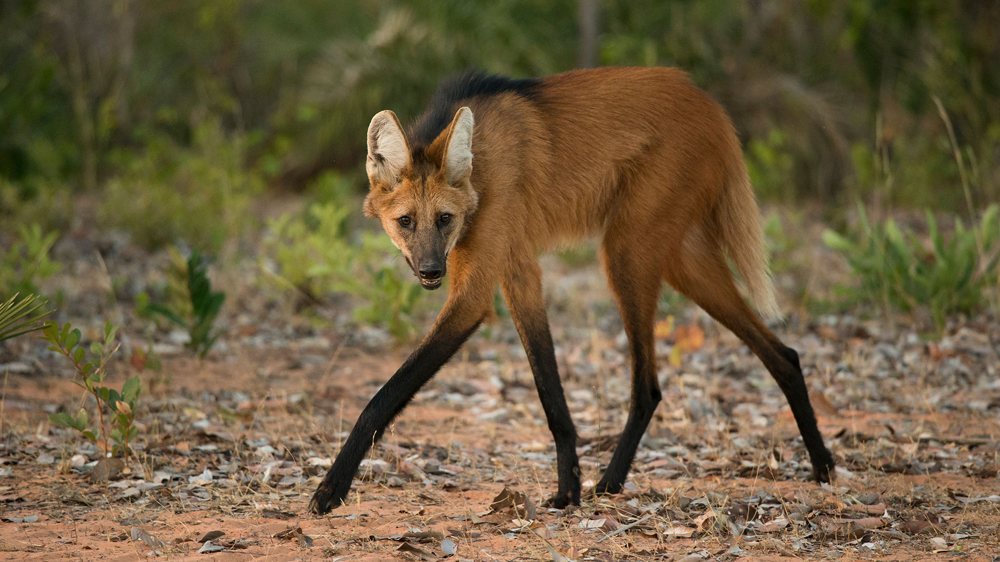

Hace un año rescatamos a Yarará, un Aguará Guazú macho que fue encontrado en cautiverio tras ser vendido como animal exótico. Sus patas habían sido lastimadas durante años de encierro. Hoy, después de meses de rehabilitación y fisioterapia, finalmente regresa a donde pertenece.
El cazador de los esteros
El Aguará Guazú es el cánido más grande de Sudamérica, un cazador solitario que habita los humedales y esteros del norte argentino. Con sus largas patas adaptadas para moverse entre la vegetación acuática, Yarará pasó sus primeros años libres recorriendo los Esteros del Ibera.
De vuelta a la naturaleza
En una calida mañana de enero, con el equipo de veterinarios y biólogos en alerta máxima, abrimos la puerta del corral. Yarará dudó apenas un segundo antes de salir corriendo hacia el humedal, sus patas recuperadas encontrando nuevamente su ritmo natural.
"Verlo desaparecer entre los juncos con esa energía en cada paso fue el momento que validó cada esfuerzo. El Aguará Guazú volvía a ser salvaje."
Está equipado con un collar de GPS que monitoreamos semanalmente. Ya ha establecido un territorio de más de 40 kilómetros cuadrados, cazando y explorando como debe ser. La libertad tiene un precio, pero Yarará ya la está pagando correctamente: cazando de noche, descansando en el monte, viviendo como los suyos.

Tu apoyo hace posible cada liberación
Sumate al santuario y ayudanos a devolverle la libertad a más animales.